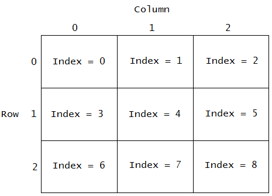

Loads an sprite sheet image file specified by sheetSource and assigns it a reference name specified by sheetName.
The function waits for the image to load before returning, and returns true if the image successfully
loaded, and false otherwise. Once loaded, the sheet image can be used by a sprite created with
addSprite, and unloaded with unloadSpriteSheet.
A sprite sheet consists of a grid of frames, which all have the same width and height. Each frame is referenced
by an index number which maps to its grid location, as shown in the image below:
